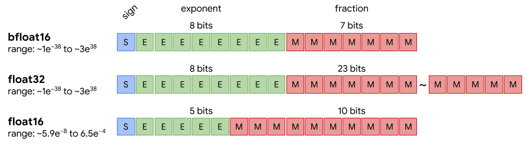
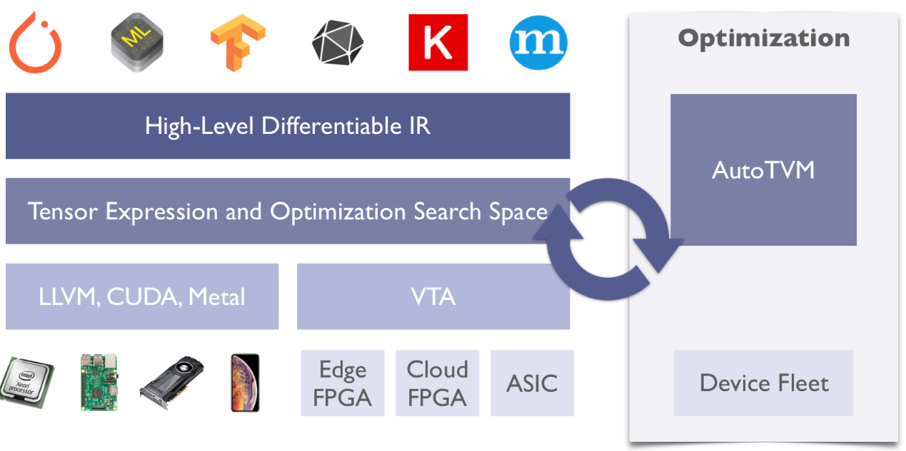

<!DOCTYPE html>
<html>
<head><meta name="generator" content="Hexo 3.9.0">
  <meta charset="utf-8">
  
<!-- Google Analytics -->
<script type="text/javascript">
(function(i,s,o,g,r,a,m){i['GoogleAnalyticsObject']=r;i[r]=i[r]||function(){
(i[r].q=i[r].q||[]).push(arguments)},i[r].l=1*new Date();a=s.createElement(o),
m=s.getElementsByTagName(o)[0];a.async=1;a.src=g;m.parentNode.insertBefore(a,m)
})(window,document,'script','//www.google-analytics.com/analytics.js','ga');

ga('create', 'UA-86850493-1', 'auto');
ga('send', 'pageview');

</script>
<!-- End Google Analytics -->


  
  <title>移动端深度学习的现状与分析 | Geek boood&#39;s blog</title>
  <meta name="viewport" content="width=device-width, initial-scale=1, maximum-scale=1">
  <meta name="description" content="这是我移动互联网这门选修课期末的大报告，主要写了移动端深度学习的一些基础的内容。">
<meta property="og:type" content="article">
<meta property="og:title" content="移动端深度学习的现状与分析">
<meta property="og:url" content="https://geekboood.github.io/2019/07/30/移动端深度学习的现状与分析/index.html">
<meta property="og:site_name" content="Geek boood&#39;s blog">
<meta property="og:description" content="这是我移动互联网这门选修课期末的大报告，主要写了移动端深度学习的一些基础的内容。">
<meta property="og:locale" content="default">
<meta property="og:image" content="https://geekboood.github.io/2019/07/30/移动端深度学习的现状与分析/image1.png">
<meta property="og:image" content="https://geekboood.github.io/2019/07/30/移动端深度学习的现状与分析/image2.png">
<meta property="og:updated_time" content="2019-07-31T04:07:31.347Z">
<meta name="twitter:card" content="summary">
<meta name="twitter:title" content="移动端深度学习的现状与分析">
<meta name="twitter:description" content="这是我移动互联网这门选修课期末的大报告，主要写了移动端深度学习的一些基础的内容。">
<meta name="twitter:image" content="https://geekboood.github.io/2019/07/30/移动端深度学习的现状与分析/image1.png">
  
    <link rel="alternate" href="/atom.xml" title="Geek boood&#39;s blog" type="application/atom+xml">
  
  
    <link rel="icon" href="/favicon.png">
  
  
    <link href="//fonts.googleapis.com/css?family=Source+Code+Pro" rel="stylesheet" type="text/css">
  
  <link rel="stylesheet" href="/css/style.css">
</head>
</html>
<body>
  <div id="container">
    <div id="wrap">
      <header id="header">
  <div id="banner"></div>
  <div id="header-outer" class="outer">
    <div id="header-title" class="inner">
      <h1 id="logo-wrap">
        <a href="/" id="logo">Geek boood&#39;s blog</a>
      </h1>
      
    </div>
    <div id="header-inner" class="inner">
      <nav id="main-nav">
        <a id="main-nav-toggle" class="nav-icon"></a>
        
          <a class="main-nav-link" href="/">Home</a>
        
          <a class="main-nav-link" href="/archives">Archives</a>
        
      </nav>
      <nav id="sub-nav">
        
          <a id="nav-rss-link" class="nav-icon" href="/atom.xml" title="RSS Feed"></a>
        
        <a id="nav-search-btn" class="nav-icon" title="Search"></a>
      </nav>
      <div id="search-form-wrap">
        <form action="//google.com/search" method="get" accept-charset="UTF-8" class="search-form"><input type="search" name="q" class="search-form-input" placeholder="Search"><button type="submit" class="search-form-submit">&#xF002;</button><input type="hidden" name="sitesearch" value="https://geekboood.github.io"></form>
      </div>
    </div>
  </div>
</header>
      <div class="outer">
        <section id="main"><article id="post-移动端深度学习的现状与分析" class="article article-type-post" itemscope itemprop="blogPost">
  <div class="article-meta">
    <a href="/2019/07/30/移动端深度学习的现状与分析/" class="article-date">
  <time datetime="2019-07-29T16:00:00.000Z" itemprop="datePublished">2019-07-30</time>
</a>
    
  </div>
  <div class="article-inner">
    
    
      <header class="article-header">
        
  
    <h1 class="article-title" itemprop="name">
      移动端深度学习的现状与分析
    </h1>
  

      </header>
    
    <div class="article-entry" itemprop="articleBody">
      
        <p>这是我移动互联网这门选修课期末的大报告，主要写了移动端深度学习的一些基础的内容。</p>
<a id="more"></a>
<h1 id="一、背景"><a href="#一、背景" class="headerlink" title="一、背景"></a>一、背景</h1><h2 id="1、-深度学习的发展"><a href="#1、-深度学习的发展" class="headerlink" title="1、 深度学习的发展"></a>1、 深度学习的发展</h2><p>从2012年发表在NIPS上的一篇进行ImageNet图像分类任务的论文­­<sup>[1]</sup>开始，深度学习重新变得火爆起来，并且有愈演愈烈的趋势。在这7年间，CV、NLP、RL等领域蓬勃发展，人们也逐渐开始重视这些深度学习的应用落地问题。笼统的说，人工智能就是想让机器拥有一部分人类或者动物的智能，比如能够识别物体、能够理解人类的语言等。</p>
<p>传统的机器学习方法，例如SVM、决策树、感知机等，他们的特点是准确度不高，需要的计算资源较少（与深度学习相比），可解释性强。但是面对越来越多、越来越困难的挑战，比如图像识别、阅读理解等任务，传统方法显得力不从心。</p>
<p>深度学习就是想利用深度神经网络来达到这个目的。从目前的众多论文来看，模型的网络结构越深，模型在这一特定任务的效果就越好。最典型的例子就是在2015年，由何凯明等人提出的ResNet<sup>[2]</sup>。ResNet通过增加Residual Block的方法，解决了当模型结构较深时梯度消失的问题。ResNet凭借152层的网络深度，打败了之前的GoogleNet以及VggNet。在2018年，Google提出了BERT（Bidirectional Encoder Representations from Transformers）<sup>[3]</sup>。凭借12层的Transformer结构以及超大的预训练语料，BERT在十几个NLP比赛中刷榜，并且远超原来第一名的分数。</p>
<p>然而模型网络越深，就意味着对于计算资源的需求也是与之俱增的。在CV任务中，最重要的一个算子叫CNN。CNN通过使用卷积核与feature map做卷积运算，得到新的feature map。卷积运算是可以被大幅并行化的，并且计算的复杂度并不高。所以GPU这种拥有几千个流处理器的结构可以轻而易举的超过CPU这种只有很少核心，但是每个核心都很强的结构。由于NVIDIA在深度学习的浪潮中抢占了先机，目前来看，NVIDIA的CUDA加速库对于深度学习等一系列计算密集的应用来说是极其重要的。</p>
<h2 id="2、-深度学习在移动端上的应用"><a href="#2、-深度学习在移动端上的应用" class="headerlink" title="2、 深度学习在移动端上的应用"></a>2、 深度学习在移动端上的应用</h2><p>目前深度学习被应用在在移动端以及嵌入式系统，例如手机、平板电脑、门禁系统、智能音箱等众多产品上。但是这些平台都是不支持CUDA加速的。另外一个通用的计算设备就是CPU，可是运行起来又会非常慢。在这种需求下，众多厂商都推出了自己的计算平台。例如Apple的Core ML，Google的TensorFlow Lite，Huawei也推出了自己的HiAI平台。但是这些平台之间很难互相兼容，性能也很难有一个统一的对比。学术界也产出了不少重要的成果，例如上海交通大学推出的TVM<sup>[4]</sup>，还有MobileNet<sup>[5]</sup>、SqueezeNet<sup>[6]</sup>等专为嵌入式设备的优化网络架构。为了降低模型体积和计算复杂度，还有人提出了模型剪枝、知识蒸馏等一系列压缩模型的方法。</p>
<h1 id="二、模型压缩方法"><a href="#二、模型压缩方法" class="headerlink" title="二、模型压缩方法"></a>二、模型压缩方法</h1><p>常用的模型压缩方法有手工设计压缩模型、模型剪枝、模型量化以及知识蒸馏等。这里我简单介绍其中的几种方法。</p>
<h2 id="1、移动端常用模型-MobileNet系列"><a href="#1、移动端常用模型-MobileNet系列" class="headerlink" title="1、移动端常用模型-MobileNet系列"></a>1、移动端常用模型-MobileNet系列</h2><p>MobileNet的第一个版本v1<sup>[5]</sup>是由Google于2017年推出的。MobileNet v1将传统的卷积核拆分成Depth wise和Point wise两部分，从而降低了运算量。它还提供了一个缩放因子，能够将卷积核的数量进一步减少。在缩放因子为1的情况下，它在ImageNet上的准确度能达到70.6%。在缩放因子为0.5的情况下，能达到63.7%的准确度。MobileNet v2<sup>[7]</sup>在2018年被提出。在ResNet的启发下，使用了Inverted residual block，缓解了由于ReLU激活函数带来的特征破坏的问题。2019年，Google由提出了MobileNet v3<sup>[8]</sup>。这次他们又借鉴了SENet<sup>[9]</sup>的squeeze-and-excite block，在模型中加入这样的一个attention机制，并使用NAS来优化网络结构。</p>
<p>表格 1 三代MobileNet模型对比</p>
<table>
<thead>
<tr>
<th>Network</th>
<th>Top-1 Accuracy</th>
<th>Million-adds</th>
<th>Params</th>
</tr>
</thead>
<tbody><tr>
<td>MobileNet v1</td>
<td>70.6%</td>
<td>569</td>
<td>4.2</td>
</tr>
<tr>
<td>MobileNet v2</td>
<td>72.0%</td>
<td>300</td>
<td>3.4</td>
</tr>
<tr>
<td>MobileNet v3-large</td>
<td>75.2%</td>
<td>219</td>
<td>5.4</td>
</tr>
<tr>
<td>MobileNet v3-small</td>
<td>67.4%</td>
<td>66</td>
<td>2.9</td>
</tr>
</tbody></table>
<p>总体来说，MobileNet在近三年中每年都能提出新的网络结构，每次又会借鉴学术界一些新的成果，从而达到提升精度并减少运算量的目的。</p>
<p>MobileNet已经被广泛应用于CV的各个领域，来压缩模型并减少运算量。由于CNN的结构具有一定的通用性，绝大多数任务都会使用一个encoder来抽取特征，并且在数据集较小的情况下大家都会使用预训练模型来提升精度。因此，直接将传统网络修改成使用MobileNet作为encoder的网络是非常容易的。我们比较常用的有由FaceNet<sup>[10]</sup>修改而来的精简版，由SSD<sup>[11]</sup>目标检测框架修改而来的MobileNet-SSD等。</p>
<h2 id="2、提升精度、减小体积的发paper利器-multi-task"><a href="#2、提升精度、减小体积的发paper利器-multi-task" class="headerlink" title="2、提升精度、减小体积的发paper利器-multi-task"></a>2、提升精度、减小体积的发paper利器-multi-task</h2><p>Multi-task或者joint-learning也是近年来研究的热点。Mask-RCNN<sup>[12]</sup>应该算是其中的一个例子，它既能进行物体识别也能进行实例分割。在NLP领域也有很多multi-task的论文。NLP的基础任务一般有分词、词性标注、命名实体识别、语义角色标注等，这些任务之间有些是相互依赖的，比如中文NLP的首要任务是分词，然后才能进行后续操作。但是又由于这些任务是相互独立的，所以后一个任务会受制于前一个任务的精度，并且模型的总体积也呈线性增长。所以在使用RNN这种encoder-decoder结构时，因为输入都是同样的句子，最基本的想法是让他们共用encoder部分，然后每个任务分别使用一个decoder。当然我们也可以根据任务的不同设计特殊的decoder，或者在decoder和encoder之间建立不同的联系。</p>
<h2 id="3、模型剪枝"><a href="#3、模型剪枝" class="headerlink" title="3、模型剪枝"></a>3、模型剪枝</h2><p>模型剪枝的大体思想是，一个模型中不是所有参数都是有用的，换句话说，模型中很多参数对于最终输出结果的贡献较小。我们可以在损失有限的精度的前提下，去掉这些参数来减小模型的大小以及计算复杂度。模型剪枝的方法有很多，大家按不同的贡献评估方法从不同的维度对模型进行剪枝，这里就不一一叙述了。但是模型剪枝并不能很好的应用到端到端模型上，例如LSTM、Transformer或者语义分割这种模型。因为端到端的特点，比如你输入一段文本，输出也是一段文本。输入一幅图像，输出也是一幅图像，因此很难去判断模型中每个参数对结果的贡献大小。况且端到端模型一般是对称的，去除掉一些参数会对模型的结构造成破坏。所以模型剪枝在这些场景中并不好用，相关的论文以及研究成果也不多。</p>
<h2 id="4、模型量化"><a href="#4、模型量化" class="headerlink" title="4、模型量化"></a>4、模型量化</h2><p> 模型量化是深度学习中使用最广泛的模型压缩方法。在模型的训练过程中，我们一般使用float32来代表一个浮点数，也就是说用32个比特来表示一个浮点数。如图所示，FP32使用一个比特来代表符号，使用8个比特来代表指数部分，使用23个比特来代表分数部分。</p>
<p>而在模型的推理过程中，我们常常使用float16，甚至int8来表示模型中的参数，以此来减小模型体积并加速推断速度。float16使用一个比特当作符号位，5个比特来表示指数部分，10个比特来表示分数部分。因此float16能表示的数值范围要比float32小得多。</p>
<p>为了解决这个问题，人们提出了bfloat16。bfloat16使用了一个比特作为符号位，八个比特作为指数部分，7个比特作为分数部分。直观来讲，bfloat16只是比float32少了16个比特来表示分数部分。因此bfloat16的表示范围比float32小了一些，但是精度差很多。bfloat16这种数据表示方法已经被TensorFlow支持，并且即将推出的很多加速硬件也会支持他。从float32到bfloat16的转换，我们只需要舍弃掉后16个比特就可以了。这只会造成精度上的一些损失，就不用担心从float32到float16的转换会造成溢出的问题。</p>
<p>而使用int8、int4甚至binary来表示数值就有些麻烦。我们需要定义一个缩放系数，来将原来的浮点数映射为整数。但是使用整数来进行推断会带来极大的优势，我们需要的硬件规模以及计算消耗的能源都急剧减少。因此很多人都在进行这方面的研究。</p>
<p>从目前市面上能买到的产品来讲，NVIDIA的Turing系列GPU是对模型量化支持最好的。这些产品在进行float16运算时的性能比float32翻了一倍，在进行模型推断时极具优势。NVIDIA也推出了混合精度训练工具APEX，能够在训练时用不同的精度来表示不同的算子，从而加速模型的训练过程。</p>
<h1 id="三、移动端常用技术及框架"><a href="#三、移动端常用技术及框架" class="headerlink" title="三、移动端常用技术及框架"></a>三、移动端常用技术及框架</h1><h2 id="1、移动端常用技术"><a href="#1、移动端常用技术" class="headerlink" title="1、移动端常用技术"></a>1、移动端常用技术</h2><p>这里提供一些后面会用到的技术解释，如下表[6]所示。</p>
<p>表格 2 常用技术解释</p>
<table>
<thead>
<tr>
<th>ARM NEON</th>
<th>OpenCL</th>
<th>Vulkan</th>
<th>CUDA</th>
</tr>
</thead>
<tbody><tr>
<td>ARM NEON是一个高级SIMD (single instruction multiple data) 指令集，并且所有的Arm Cortex-A series处理器都支持。目前绝大多数移动以及嵌入式设备都使用ARM的核心，高性能设备都使用Cortex-A系列或者在其基础上定制。</td>
<td>OpenCL是一个能够编写面向异构系统跨平台执行程序的框架，它支持CPU、GPU、DSP和FPGA。NVIDIA的显卡支持很强的OpenCL性能，TITAN RTX拥有16.8TFLOPS的单精度浮点数计算能力。移动GPU也支持OpenCL，只不过没有那么强的性能。</td>
<td>Vulkan是一个低开销、跨平台的二维、三维图形与计算的应用程序接口，提供更低的CPU开销与更直接的GPU控制。Vulkan API适用于从高性能计算机到移动GPU，并且在多核心CPU上，能对核心与线程进行优化。</td>
<td>CUDA (Compute Unified Device Architecture，统一计算架构） 是由NVIDIA所推出的一种集成技术，是该公司对于GPGPU的正式名称。目前移动端只有NVIDIA TX1, TX2, NANO, Xavier等平台支持。</td>
</tr>
</tbody></table>
<h2 id="2、移动端常见芯片对比"><a href="#2、移动端常见芯片对比" class="headerlink" title="2、移动端常见芯片对比"></a>2、移动端常见芯片对比</h2><p>为了加速深度学习在移动设备上的推理，很多厂家都推出了带深度学习加速功能的芯片。但不幸的是，这些厂家各自为战，每家都要推自己的生态。Apple想要推自己的CoreML，Qualcomm想要推自己基于DSP的加速器，HiSilicon使用了寒武纪的IP核，并推出了自己的HiAI平台。为了统一在Android平台的接口，方便开发者进行开发适配，Google在Android 8.1及更高版本的系统中加入了NNAPI，想要为这些设备提供一个统一的接口。遗憾的是这些芯片对其的支持不一，比如Qualcomm的DSP就无法在NNAPI中调用。</p>
<p>表格 3常见芯片对比</p>
<table>
<thead>
<tr>
<th>芯片名称</th>
<th>A12 Bonic</th>
<th>Snapdragon 845</th>
<th>Kirin 980</th>
</tr>
</thead>
<tbody><tr>
<td>生产厂家</td>
<td>Apple</td>
<td>Qualcomm</td>
<td>HiSilicon</td>
</tr>
<tr>
<td>CPU</td>
<td>2 x Vortex cores @ 2.4GHz</td>
<td>1 x Kryo 485 Gold @ 2.84GHz + 3 x Kryo 485 Gold @ 2.42GHz + 4 x Kryo 485 Silver @ 1.8GHz</td>
<td>4 x Cortex-A76 cores @ 2.6GHz + 4 x Cortex-A55 cores @ 1.8GHz</td>
</tr>
<tr>
<td>GPU</td>
<td>Apple designed GPU</td>
<td>Adreno 640</td>
<td>Mali-G76 MP10</td>
</tr>
<tr>
<td>专用加速硬件</td>
<td>NPU</td>
<td>Hexagon 685 DSP</td>
<td>NPU</td>
</tr>
<tr>
<td>专用加速硬件标称性能</td>
<td>5 TOPS (int8)</td>
<td>7 TOPS (未标注精度)</td>
<td>无确切数据</td>
</tr>
<tr>
<td>制程</td>
<td>TSMC 7 nm</td>
<td>TSMC 7nm</td>
<td>TSMC 7nm</td>
</tr>
</tbody></table>
<table>
<thead>
<tr>
<th>芯片名称</th>
<th>Exynos 9820</th>
<th>NVIDIA TX2</th>
<th>RK3399Pro</th>
</tr>
</thead>
<tbody><tr>
<td>生产厂家</td>
<td>Samsung</td>
<td>NVIDIA</td>
<td>Rockchip</td>
</tr>
<tr>
<td>CPU</td>
<td>2 x Mongoose 4 cores + 2 x Cortex-A75 cores + 4 x Cortex-A55 cores</td>
<td>2 x Denver 2 cores + 4 x Cortex-A57 cores</td>
<td>2 x Cortex-A72 cores @ 1.8GHz+ 4 x Cortex-A57 cores @ 1.4GHz</td>
</tr>
<tr>
<td>GPU</td>
<td>Mali-G76 MP12</td>
<td>256-core NVIDIA Pascal™ GPU</td>
<td>Mali-T860 MP4</td>
</tr>
<tr>
<td>专用加速硬件</td>
<td>NPU</td>
<td>CUDA cores</td>
<td>NPU</td>
</tr>
<tr>
<td>专用加速硬件标称性能</td>
<td>无确切数据</td>
<td>1.3 TOP (未标注精度)</td>
<td>3 TOPS (int8)</td>
</tr>
<tr>
<td>制程</td>
<td>Samsung 8 nm</td>
<td>TSMC 16nm</td>
<td>HKMG 28 nm</td>
</tr>
</tbody></table>
<p>由于各个厂家各自为战，以及硬件规格的不同，不同芯片对算子的支持也不一样。一些新出来的算子 (比如用在MobileNet V3中的ReLU6) 是不会被支持的。因此现在深度学习在移动设备上的加速主要依靠CPU，有部分框架支持部分GPU。所以在上表中我列出了不同芯片的CPU、GPU以及专用加速硬件来进行对比。</p>
<h2 id="3、常用框架"><a href="#3、常用框架" class="headerlink" title="3、常用框架"></a>3、常用框架</h2><p></p>
<p>TVM是由陈天奇团队开发的端到端深度学习编译器堆栈。它在底层支持CPU、GPU、FPGA等芯片，并在顶层支持Keras, MXNet, PyTorch, TensorFlow等常用框架。TVM支持两种层面的深度学习优化方法，计算图层面以及算子层面。举个例子，在计算图层面我们可以合并卷积和BN (Batch Normalization) 算子。在算子层面，可以面向某款特定的硬件提高算子的并行化程度。从用户的角度来讲，计算图层面的优化是自动的，算子层面的优化需要用户手动去实现。</p>
<p>TVM最大的优点是提供了面向不同平台的统一的加速框架。因此我们可以轻而易举的将在任意主流深度学习框架下训练好的模型，优化后部署到不同设备上。同时对于高级用户，提供简单的底层优化接口。在移动设备上，TVM支持CPU、OpenCL、Vulkan以及CUDA加速。但是由于硬件结构的不同，在使用OpenCL和Vulkan进行加速时需要手动编写对应的Scheduler，否则无法发挥应有的性能。TVM官方只提供了针对Mali GPU的Scheduler，在使用其他GPU时性能会很差。</p>
<p>TVM官方提供了不同模型在不同平台的测试数据。这里我们以ResNet50模型作为统一的衡量标准，来对比不同平台的性能。</p>
<p>表格 4 ResNet 50在不同平台上的推断时间对比</p>
<table>
<thead>
<tr>
<th>Hardware</th>
<th>Inference time (ms)</th>
</tr>
</thead>
<tbody><tr>
<td>Raspberry Pi 3B (CPU)</td>
<td>726.0</td>
</tr>
<tr>
<td>Huawei P20 Pro (CPU)</td>
<td>232.5</td>
</tr>
<tr>
<td>Pixel 2 (CPU)</td>
<td>181.1</td>
</tr>
<tr>
<td>RK3399 (CPU)</td>
<td>403.2</td>
</tr>
<tr>
<td>RK3399 (GPU)</td>
<td>354.7</td>
</tr>
<tr>
<td>NVIDIA GTX 1080 Ti (GPU)</td>
<td>2.8</td>
</tr>
<tr>
<td>NVIDIA Jetson TX2 (GPU)</td>
<td>26.2</td>
</tr>
<tr>
<td>AMD Vega FE (GPU)</td>
<td>4.5</td>
</tr>
</tbody></table>
<p>从上表中我们可以看到，进行推断的平台有手机、嵌入式开发板以及显卡三大类。在嵌入式设备上还提供了CPU和GPU两种方法。在上表中，推断速度最快的是NVIDIA的台式机显卡，其次是AMD的台式机显卡。NVIDIA的TX2平台由于拥有CUDA加速，在嵌入式设备中遥遥领先。剩下的就数P20的CPU最快，其次是RK3399的GPU。</p>
<p>ncnn是腾讯推出的为手机端优化的推断框架，声称为ARM NEON提供汇编指令级的优化，同时也支持Vulkan API GPU 加速。据官方GitHub repo称，该框架目前已在腾讯多款应用中使用，如 QQ，Qzone，微信，天天P图等。</p>
<p>TensorFlow Lite是Google推出的嵌入式设备推断框架，主要运行在手机上，并提供模型剪枝量化等功能。由于生态的原因，在TensorFlow Lite中我们可以很轻易实现模型的量化。下表是这两个框架与TVM在不同设备、不同模型上的对比，数据均来自各个框架官方的评测数据。</p>
<p>表格 5 不同框架在不同平台上的性能对比</p>
<table>
<thead>
<tr>
<th>Framework</th>
<th>Hardware</th>
<th>Model</th>
<th>Inference time (ms)</th>
</tr>
</thead>
<tbody><tr>
<td>TVM</td>
<td>RK3399</td>
<td>MobileNet_v2</td>
<td>64.8</td>
</tr>
<tr>
<td>ncnn</td>
<td>RK3399</td>
<td>MobileNet_v2</td>
<td>85.13</td>
</tr>
<tr>
<td>TVM</td>
<td>Pixel 2 (骁龙835)</td>
<td>MobileNet_v2</td>
<td>39.6</td>
</tr>
<tr>
<td>ncnn</td>
<td>骁龙835</td>
<td>MobileNet_v2</td>
<td>77.76</td>
</tr>
<tr>
<td>TVM</td>
<td>Pixel 2 (骁龙835)</td>
<td>MobileNet_v1</td>
<td>39.6</td>
</tr>
<tr>
<td>ncnn</td>
<td>骁龙835</td>
<td>MobileNet_v1</td>
<td>68.00</td>
</tr>
<tr>
<td>ncnn</td>
<td>骁龙835</td>
<td>MobileNet_v1- int8</td>
<td>28.01</td>
</tr>
<tr>
<td>TensorFlow Lite</td>
<td>Pixel 2 (骁龙835)</td>
<td>MobileNet_v1</td>
<td>123.3</td>
</tr>
<tr>
<td>TensorFlow Lite</td>
<td>Pixel 2 (骁龙835)</td>
<td>MobileNet_v1-quant</td>
<td>65.4</td>
</tr>
<tr>
<td>ncnn</td>
<td>骁龙835</td>
<td>ResNet 50</td>
<td>688.00</td>
</tr>
<tr>
<td>ncnn</td>
<td>骁龙835</td>
<td>ResNet 50- int8</td>
<td>306.38</td>
</tr>
<tr>
<td>TVM</td>
<td>Pixel 2 (骁龙835)</td>
<td>ResNet 50</td>
<td>181.1</td>
</tr>
</tbody></table>
<p>在此表中，RK3399和高通骁龙835两款芯片都使用了big.LITTLE结构，因此在测试时，所有平台都是使用了大核心。推断时使用的图片大小均为224x224。从上表中我们不难看出，TVM在用float32精度推导时，面对其他两个框架拥有压倒性的优势。TensorFlow Lite是推理速度最慢的框架。此外，ncnn以及TensorFlow Lite都配备了量化模型的功能，ncnn在使用了这个功能后推理速度反超TVM，TensorFlow Lite无论使用不使用都是速度最慢的。</p>
<p>从上表我们可以看出，TVM是一个优秀的深度学习编译器框架。在我实际在GPU上进行推理时也体现出在推断速度以及显存占用上的优势。目前TVM已经迭代到v0.5版本，根据roadmap在v0.6版将支持模型量化，相信到那时在性能上还有一个飞跃。</p>
<h1 id="四、未来展望"><a href="#四、未来展望" class="headerlink" title="四、未来展望"></a>四、未来展望</h1><p>Google在2019年的开发者大会在5月7日召开。期间最令我感到震撼的是升级版的Google Assistant。从现场的展示来看，Google的这个产品拥有难以置信的理解意图的能力，流畅的体验以及Google整个生态的整合。将这个产品的功能解剖来看，最重要的是Google在2019年3月在官方博客[12]公开的移动端全神经网络ASR (Automatic Speech Recognition)模型。以往的ASR模型由特征抽取和解码两部分组成，其中解码部分依靠一个体积在GB级的有限状态机，需要将其放在内存中来保证解码的速度，因此这种模型是不可能部署在移动设备上，只能放在云端让用户去调用。但是这样会带来速度和隐私方面的问题。Google使用了RNN Transducers<sup>[13]</sup>模型，整个模型有450MB。在经过量化之后，模型体积只有80MB，使用移动深度学习推断框架可以在单核上达到实时性能。遗憾的是，目前这个模型只支持英语的语音识别，在移动设备上的中文的实时语音识别还需要大家去努力实现。</p>
<p>移动端ASR模型是语音助手、智能音箱等产品的基础。在此之上，Google还表现出在自然语言理解、对话管理、人机交互等领域的实力，以及配合Google Maps，Google Photo等整个生态的能力。这次发布的升级版语音助手是这些技术的集大成者，值得我们去关注、学习。</p>
<p>我在大三时的大创项目的题目为基于多种交互技术的智能网关，本质上是一个加入全息投影和摄像头的智能音箱。在我们开发的过程中使用了很多深度学习模型，CV方面就有人脸检测、人脸特征向量提取、表情识别，NLP方面还有NLU、NER、ODQA等模型，再加上语音识别和语音合成，整个系统的模型加起来就有13GB左右。因此我们使用了Intel的笔记本处理器搭配神经计算棒来进行推理，整个平台的成本很高，而且目前还只能跑起来CV部分的算法。因此如何在移动端这种低成本、低功耗的平台上运行深度学习模型是当前学术界和工业界共同关注的问题。</p>
<p>我也是在机缘巧合之下才开始关注这个领域的。几个月前国内自动驾驶领域的初创公司momenta有一个open day的活动，在这个活动中他们展示了一个智能后视镜，能够识别坐在驾驶位上的人是不是车主本人，还能对危险动作比如抽烟、打电话、玩手机或者疲劳驾驶进行识别。整个系统运行在一个ARM的低成本芯片上，十分令人震撼。看过这个产品之后我才知道深度学习加速这个领域大有可为。以往我们都是改改模型结构，刷刷精度，固然对于学术界做出了一些贡献，但是这些东西很难去落地应用。在这篇报告中我描述了一些常用的方法以及成功的案例，这是我平时了解到的相关内容的一个总结，也加上了我的一些想法观点。</p>
<h1 id="引用"><a href="#引用" class="headerlink" title="引用"></a>引用</h1><ol>
<li><p>Krizhevsky, A., Sutskever, I., &amp; Hinton, G. E. (2017). ImageNet classification with deep convolutional neural networks. <em>Communications of The ACM</em>, <em>60</em>(6), 84–90.</p>
</li>
<li><p>He, K., Zhang, X., Ren, S., &amp; Sun, J. (2016). Deep Residual Learning for Image Recognition. In <em>2016 IEEE Conference on Computer Vision and Pattern Recognition (CVPR)</em> (pp. 770–778).</p>
</li>
<li><p>Devlin, J., Chang, M.-W., Lee, K., &amp; Toutanova, K. (2018). BERT: Pre-training of Deep Bidirectional Transformers for Language Understanding. <em>ArXiv Preprint ArXiv:1810.04805</em>.</p>
</li>
<li><p>Chen, T., Moreau, T., Jiang, Z., Zheng, L., Yan, E., Cowan, M., … Ceze, L. (2018). TVM: an automated end-to-end optimizing compiler for deep learning. <em>Operating Systems Design and Implementation</em>, 579–594.</p>
</li>
<li><p>Howard, A. G., Zhu, M., Chen, B., Kalenichenko, D., Wang, W., Weyand, T., … Adam, H. (2017). MobileNets: Efficient Convolutional Neural Networks for Mobile Vision Applications. <em>ArXiv Preprint ArXiv:1704.04861</em>.</p>
</li>
<li><p>Iandola, F. N., Han, S., Moskewicz, M. W., Ashraf, K., Dally, W. J., &amp; Keutzer, K. (2017). SqueezeNet: AlexNet-level accuracy with 50x fewer parameters and &lt;0.5MB model size. <em>ArXiv Preprint ArXiv:1602.07360</em>.</p>
</li>
<li><p>Sandler, M. B., Howard, A., Zhu, M., Zhmoginov, A., &amp; Chen, L.-C. (2018). MobileNetV2: Inverted Residuals and Linear Bottlenecks. In <em>2018 IEEE/CVF Conference on Computer Vision and Pattern Recognition</em> (pp. 4510–4520).</p>
</li>
<li><p>Howard, A., Sandler, M., Chu, G., Chen, L. C., Chen, B., Tan, M., … &amp; Le, Q. V. (2019). Searching for MobileNetV3. <em>arXiv preprint arXiv:1905.02244</em>.</p>
</li>
<li><p>Hu, J., Shen, L., &amp; Sun, G. (2018). Squeeze-and-Excitation Networks. In <em>2018 IEEE/CVF Conference on Computer Vision and Pattern Recognition</em> (pp. 7132–7141).</p>
</li>
<li><p>Schroff, F., Kalenichenko, D., &amp; Philbin, J. (2015). FaceNet: A unified embedding for face recognition and clustering. In <em>2015 IEEE Conference on Computer Vision and Pattern Recognition (CVPR)</em> (pp. 815–823).</p>
</li>
<li><p>Liu, W., Anguelov, D., Erhan, D., Szegedy, C., Reed, S. E., Fu, C.-Y., &amp; Berg, A. C. (2016). SSD: Single Shot MultiBox Detector. <em>European Conference on Computer Vision</em>, 21–37.</p>
</li>
<li><p>He, K., Gkioxari, G., Dollár, P., &amp; Girshick, R. B. (2017). Mask R-CNN. In <em>2017 IEEE International Conference on Computer Vision (ICCV)</em> (pp. 2980–2988).</p>
</li>
<li><p>Graves, A. (2012). Sequence Transduction with Recurrent Neural Networks. <em>ArXiv Preprint ArXiv:1211.3711</em>.</p>
</li>
</ol>

      
    </div>
    <footer class="article-footer">
      <a data-url="https://geekboood.github.io/2019/07/30/移动端深度学习的现状与分析/" data-id="cjyqqoqvz00072usfrlp0y85k" class="article-share-link">Share</a>
      
      
    </footer>
  </div>
  
    
<nav id="article-nav">
  
    <a href="/2019/07/30/用Kubernetes建立实验集群/" id="article-nav-newer" class="article-nav-link-wrap">
      <strong class="article-nav-caption">Newer</strong>
      <div class="article-nav-title">
        
          用Kubernetes建立实验集群
        
      </div>
    </a>
  
  
    <a href="/2017/09/04/微博与Elastic的亿级数据实践/" id="article-nav-older" class="article-nav-link-wrap">
      <strong class="article-nav-caption">Older</strong>
      <div class="article-nav-title">微博与elastic的亿级数据实践</div>
    </a>
  
</nav>

  
</article>

</section>
        
          <aside id="sidebar">
  
    

  
    

  
    
  
    
  <div class="widget-wrap">
    <h3 class="widget-title">Archives</h3>
    <div class="widget">
      <ul class="archive-list"><li class="archive-list-item"><a class="archive-list-link" href="/archives/2019/07/">July 2019</a></li><li class="archive-list-item"><a class="archive-list-link" href="/archives/2017/09/">September 2017</a></li><li class="archive-list-item"><a class="archive-list-link" href="/archives/2017/03/">March 2017</a></li><li class="archive-list-item"><a class="archive-list-link" href="/archives/2017/02/">February 2017</a></li><li class="archive-list-item"><a class="archive-list-link" href="/archives/2017/01/">January 2017</a></li><li class="archive-list-item"><a class="archive-list-link" href="/archives/2015/07/">July 2015</a></li></ul>
    </div>
  </div>


  
    
  <div class="widget-wrap">
    <h3 class="widget-title">Recent Posts</h3>
    <div class="widget">
      <ul>
        
          <li>
            <a href="/2019/07/30/BERT相关的一些实践/">BERT相关的一些实践</a>
          </li>
        
          <li>
            <a href="/2019/07/30/用Kubernetes建立实验集群/">用Kubernetes建立实验集群</a>
          </li>
        
          <li>
            <a href="/2019/07/30/移动端深度学习的现状与分析/">移动端深度学习的现状与分析</a>
          </li>
        
          <li>
            <a href="/2017/09/04/微博与Elastic的亿级数据实践/">微博与elastic的亿级数据实践</a>
          </li>
        
          <li>
            <a href="/2017/03/25/使用微博语料训练词向量/">使用微博语料训练词向量</a>
          </li>
        
      </ul>
    </div>
  </div>

  
</aside>
        
      </div>
      <footer id="footer">
  
  <div class="outer">
    <div id="footer-info" class="inner">
      &copy; 2019 Geek boood<br>
      Powered by <a href="http://hexo.io/" target="_blank">Hexo</a>
    </div>
  </div>
</footer>
    </div>
    <nav id="mobile-nav">
  
    <a href="/" class="mobile-nav-link">Home</a>
  
    <a href="/archives" class="mobile-nav-link">Archives</a>
  
</nav>
    

<script src="//ajax.googleapis.com/ajax/libs/jquery/2.0.3/jquery.min.js"></script>


  <link rel="stylesheet" href="/fancybox/jquery.fancybox.css">
  <script src="/fancybox/jquery.fancybox.pack.js"></script>


<script src="/js/script.js"></script>


  </div>
</body>
</html>